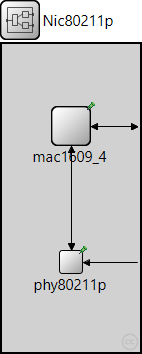
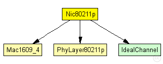
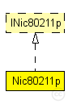

This documentation is released under the Creative Commons license
This documentation is released under the Creative Commons licenseThis NIC implements an 802.11p network interface card.
Author: David Eckhoff
See also: DemoBaseApplLayer
See also: Mac1609_4
See also: PhyLayer80211p
The following diagram shows usage relationships between types. Unresolved types are missing from the diagram.
The following diagram shows inheritance relationships for this type. Unresolved types are missing from the diagram.
| Name | Type | Default value | Description |
|---|---|---|---|
| connectionManagerName | string | "connectionManager" |
| Name | Direction | Size | Description |
|---|---|---|---|
| upperLayerIn | input |
to upper layers |
|
| upperLayerOut | output |
from upper layers |
|
| upperControlOut | output |
control information |
|
| upperControlIn | input |
control information |
|
| radioIn | input |
radioIn gate for sendDirect |
| Name | Type | Default value | Description |
|---|---|---|---|
| phy80211p.recordStats | bool | false |
enable/disable tracking of statistics (eg. cOutvectors) |
| phy80211p.usePropagationDelay | bool |
Should transmission delay be simulated? |
|
| phy80211p.noiseFloor | double |
catch-all for all factors negatively impacting SINR (e.g., thermal noise, noise figure, ...) |
|
| phy80211p.useNoiseFloor | bool |
should a noise floor be considered when calculating SINR? |
|
| phy80211p.antenna | xml | xml(" |
|
| phy80211p.antennaOffsetX | double | 0 m |
Offset of antenna position (x direction) with respect to what a BaseMobility module will tell us (inherited from IChannelAccess) |
| phy80211p.antennaOffsetY | double | 0 m |
Offset of antenna position (y direction) with respect to what a BaseMobility module will tell us (inherited from IChannelAccess) |
| phy80211p.antennaOffsetZ | double | 1.895 m |
Offset of antenna position (z direction) with respect to what a BaseMobility module will tell us (inherited from IChannelAccess) |
| phy80211p.antennaOffsetYaw | double | 0 rad |
Offset of antenna orientation (yaw) with respect to what a BaseMobility module will tell us (inherited from IChannelAccess) |
| phy80211p.analogueModels | xml |
Specification of the analogue models to use and their parameters |
|
| phy80211p.decider | xml |
Specification of the decider to use and its parameters |
|
| phy80211p.minPowerLevel | double |
The minimum receive power needed to even attempt decoding a frame |
|
| phy80211p.timeRXToTX | double | 0 s | |
| phy80211p.timeRXToSleep | double | 0 s |
Elapsed time to switch from receive to sleep state |
| phy80211p.timeTXToRX | double | 0 s |
Elapsed time to switch from send to receive state |
| phy80211p.timeTXToSleep | double | 0 s |
Elapsed time to switch from send to sleep state |
| phy80211p.timeSleepToRX | double | 0 s |
Elapsed time to switch from sleep to receive state |
| phy80211p.timeSleepToTX | double | 0 s |
Elapsed time to switch from sleep to send state |
| phy80211p.initialRadioState | int | 0 |
State the radio is initially in (0=RX, 1=TX, 2=Sleep) |
| phy80211p.radioMinAtt | double | 1.0 |
radios gain factor (attenuation) while receiving |
| phy80211p.radioMaxAtt | double | 0.0 |
radios gain factor (attenuation) while not receiving |
| phy80211p.nbRadioChannels | int | 1 |
Number of available radio channels. Defaults to single channel radio. |
| phy80211p.initialRadioChannel | int | 0 |
Initial radio channel. |
| phy80211p.ccaThreshold | double | -65 dBm |
defines the CCA threshold |
| phy80211p.collectCollisionStatistics | bool | false |
enables/disables collection of statistics about collision. notice that enabling this feature increases simulation time |
| phy80211p.allowTxDuringRx | bool | false |
decides whether aborting the simulation or not if the MAC layer requires phy to transmit a frame while currently receiveing another |
| mac1609_4.notAffectedByHostState | bool | false | |
| mac1609_4.headerLength | int | 0 bit |
length of the MAC packet header (in bits) |
| mac1609_4.address | string | "auto" |
MAC address as hex string (12 hex digits), or "auto". "auto" values will be replaced by a generated MAC address in init stage 1. |
| mac1609_4.useServiceChannel | bool | true |
cycle between an SCH and the CCH (or stay on CCH all the time) |
| mac1609_4.serviceChannel | int | 1 |
the service channel this maclayer listens on when started |
| mac1609_4.bitrate | int | 6 Mbps |
bit rate |
| mac1609_4.syncOffset | double | 0.0003s |
maximum artificial asynchronization between cars to avoid synchronization effects |
| mac1609_4.txPower | double |
tx power [mW] |
|
| mac1609_4.queueSize | int | 0 |
the maximum queue size of an EDCA queue in the MAC. 0 for unlimited. Queue strategy is "drop if full" |
| mac1609_4.dot11RTSThreshold | int | 12000bit |
unicast parameters |
| mac1609_4.dot11ShortRetryLimit | int | 7 | |
| mac1609_4.dot11LongRetryLimit | int | 4 | |
| mac1609_4.ackLength | int | 112bit | |
| mac1609_4.useAcks | bool | false | |
| mac1609_4.frameErrorRate | double | 0 |
artificial drop rates for data frames and acknowledgements for testing purposes |
| mac1609_4.ackErrorRate | double | 0 |
// // This NIC implements an 802.11p network interface card. // // @author David Eckhoff // // @see DemoBaseApplLayer // @see Mac1609_4 // @see PhyLayer80211p // module Nic80211p like INic80211p { parameters: string connectionManagerName = default("connectionManager"); gates: input upperLayerIn; // to upper layers output upperLayerOut; // from upper layers output upperControlOut; // control information input upperControlIn; // control information input radioIn; // radioIn gate for sendDirect submodules: phy80211p: PhyLayer80211p { @display("p=69,218;i=block/process_s"); } mac1609_4: Mac1609_4 { @display("p=69,82"); } connections: radioIn --> phy80211p.radioIn; mac1609_4.lowerControlOut --> phy80211p.upperControlIn; mac1609_4.lowerLayerOut --> phy80211p.upperLayerIn; phy80211p.upperLayerOut --> mac1609_4.lowerLayerIn; phy80211p.upperControlOut --> mac1609_4.lowerControlIn; mac1609_4.upperControlIn <-- upperControlIn; mac1609_4.upperLayerIn <-- upperLayerIn; mac1609_4.upperLayerOut --> upperLayerOut; mac1609_4.upperControlOut --> upperControlOut; }
This documentation is released under the Creative Commons license